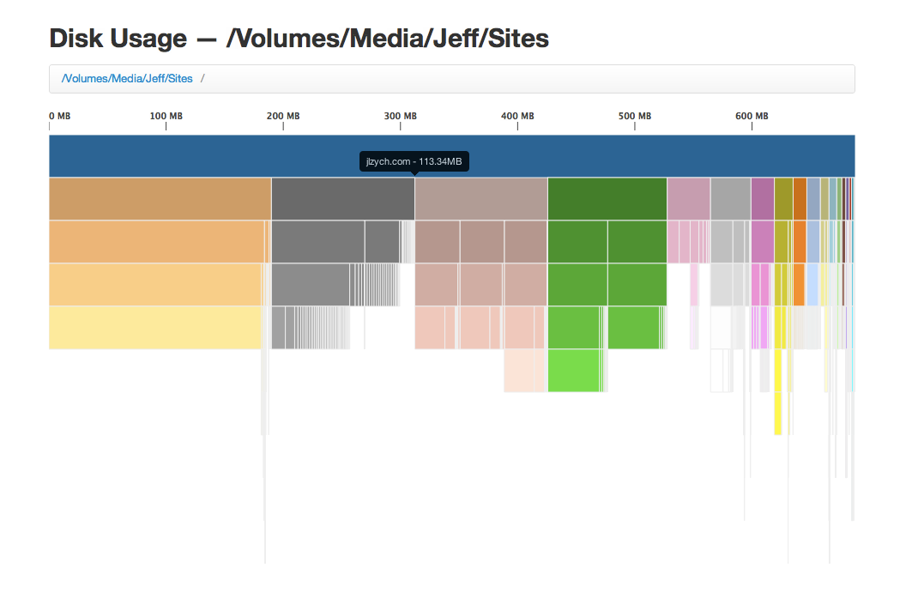

Disk Usage Visualization
I created this interactive visualization to help people find the files and folders that are using the most space on their hard drives so they may delete those that are no longer needed. I wrote it using d3.js, jQuery, and Twitter’s Bootstrap. Thanks to DaisyDisk for the inspiration.